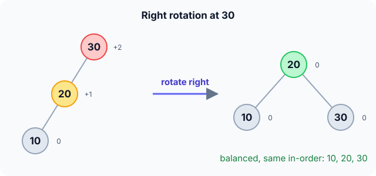

Prerequisites
- Binary search tree insert and search.
- Height of a tree (see Binary tree basics).
- Pointer rewiring.
The analogy
Everyday analogy
Think of a mobile hanging over a baby's cot. If one side gets too heavy, you shift the hanging point so it balances again, without changing what hangs on it.
An AVL rotation does that to a tree. When one side becomes two levels taller, a node moves up and its parent moves down to the other side. The left-to-right order of the values never changes.
How it works
Start with one rotation by hand
The balance factor of a node is height(left) − height(right) and must stay in −1, 0, +1. Insert 30, 20, 10 in that order. Predict, then open "Check".
Example: predict before you read
Step 1. After inserting 30 and 20, predict the balance factor of 30.
Check
+1: its left subtree (20) has height 0 and its right subtree is empty (height −1). Still allowed.
Step 2. Cover the next line and guess: after inserting 10 (left of 20), what is 30's balance factor, and is it allowed?
Check
+2: left height 1, right height −1. Not allowed: the tree must rotate.
Step 3. Rotate right at 30. Predict the new root and its children.
Check
20 becomes the root, with 10 on the left and 30 on the right. Every balance factor is 0, and in-order is still 10, 20, 30.

Quick recall: Before reading further, cover the text above and say out loud: what does a rotation preserve, and what does it change?
Check your answer
It preserves the in-order (sorted) order of the keys; it changes which node is the parent, and so the heights.
Finish the picture: the zig-zag case
Now insert 30, 10, 20: 10 goes left of 30, then 20 goes right of 10. 30 has balance factor +2 again.
- One right rotation at 30. Predict whether it fixes the tree.
Check
No: 10 would become the root with 30 as its right child and 20 under 30, leaning the other way (balance −2).
- Rotate left at 10, then right at 30. Predict the result.
Check
The left rotation turns 30 → 10 → 20 into 30 → 20 → 10, the left-left case; the right rotation then gives 20 with children 10 and 30.
Quick recall: Without scrolling up, say out loud: why does the left-right case need two rotations?
Check your answer
The heavy part is in the middle. A single right rotation would just make it lean the other way; first rotating left at the child turns it into the simple left-left case.
The rule in plain words
After each insert or delete, walk back up the path, updating heights. At the first node whose balance factor is ±2, rotate.
Left-left: rotate right. Right-right: rotate left. Left-right: rotate left at the child, then right. Right-left: rotate right at the child, then left.
Quick recall: Before you read the code, write the three pointer changes of a right rotation at y in your own words. Then check below.
Check your answer
1. Let x be y's left child. 2. x's right subtree becomes y's left subtree. 3. y becomes x's right child, and x is the new subtree root.
The code
Read this code after you have done the rotation by hand. It will make more sense.
typedef struct Node { int val, h; struct Node *left, *right; } Node;
int ht(Node *t) { return t ? t->h : -1; } /* empty tree: height -1 */
void fix(Node *t) { int l = ht(t->left), r = ht(t->right); t->h = 1 + (l > r ? l : r); }
int balance(Node *t) { return ht(t->left) - ht(t->right); } /* must stay in -1..1 */
Node *rotate_right(Node *y) { /* y's left child x becomes the root */
Node *x = y->left;
y->left = x->right; /* x's right subtree moves under y */
x->right = y;
fix(y); fix(x); /* y is now lower: fix it first */
return x;
}Node *rotate_left(Node *x) { /* mirror image of rotate_right */
Node *y = x->right;
x->right = y->left;
y->left = x;
fix(x); fix(y);
return y;
}Definition
What you just did, in one line: an AVL tree is a binary search tree in which every node's two subtrees differ in height by at most one, restored after each change by rotations.
flowchart TD
A{"balance factor of the node?"} -->|"+2: left heavy"| B{"left child's balance?"}
A -->|"-2: right heavy"| C{"right child's balance?"}
A -->|"-1, 0, +1"| OK["no rotation"]
B -->|"+1 or 0 (left-left)"| R["rotate right"]
B -->|"-1 (left-right)"| LR["rotate left at child, then right"]
C -->|"-1 or 0 (right-right)"| L["rotate left"]
C -->|"+1 (right-left)"| RL["rotate right at child, then left"]
How fast is it?
Quick recall: Before looking at the formula, predict: can an AVL tree with 1,000,000 nodes be 100 levels tall?
Check your answer
No. Its height is at most about $1.44 \log_2 n \approx 29$.
The balance rule forces even the sparsest AVL tree to have many nodes, which caps the height:
$$h \;<\; 1.44 \, \log_2 (n + 2)$$A rotation changes three pointers and two heights, which is $O(1)$. An insert needs at most one single or double rotation; a delete may need one per level, still $O(\log n)$.
| Operation | Cost | Why |
|---|---|---|
| Search | $O(\log n)$ | Height is at most $1.44 \log_2 n$ |
| Insert | $O(\log n)$ | BST insert plus at most 2 rotations |
| Delete | $O(\log n)$ | BST delete plus up to one rotation per level |
| One rotation | $O(1)$ | Constant pointer and height updates |
| Extra space per node | $O(1)$ | Stores its height (or balance) |
Warning
Update heights bottom-up. In rotate_right, y ends up below x, so fix(y) must run before fix(x); the other order computes x's height from y's stale height.
Exam tip
Name the case from the path to the new node: two lefts = rotate right; two rights = rotate left; left then right = double rotation (left, then right); right then left = (right, then left).
Common mistakes
- Using a single rotation for a zig-zag (left-right or right-left) case.
- Forgetting that the rotated subtree's new root must be linked back into its parent.
- Mixing the height conventions, so leaves get balance factors that look wrong.
Try it yourself
Exercise 1 (warm-up)
Insert 10, 20, 30 into an empty AVL tree. Which rotation happens, and what is the result?
Hint
The tree leans right twice.
Answer
Right-right case at 10: rotate left. 20 becomes the root with children 10 and 30.
Exercise 2 (a bit harder)
Insert 50, 20, 80, 10, 30, 25 into an empty AVL tree. Where is the first imbalance, which case is it, and what is the tree afterwards? Write your answer down before you open it.
Show answer
After 25 (left of 30), node 50 has balance +2: its left subtree 20 has height 2, its right subtree 80 has height 0. 25 went left then right from 50, so it's left-right: rotate left at 20, then right at 50. Result: root 30, with left 20 (children 10, 25) and right 50 (right child 80).
Did you know?
Did you know?
The AVL tree (1962) was the first self-balancing BST, named after Adelson-Velsky and Landis, two Soviet mathematicians.
Red-black trees relax the balance rule (heights may differ more), so they rotate less on insert and delete; databases that read much more than they write sometimes prefer AVL for its shorter height.
Key points to remember
If you remember one thing from each line, remember the because.
- Every operation is $O(\log n)$ because the balance rule keeps the height below $1.44 \log_2 n$.
- Rotations keep the tree a valid BST because they never change the in-order sequence of keys.
- A rotation is $O(1)$ because it rewires a fixed number of pointers.
- Zig-zag cases need two rotations because the heavy grandchild sits in the middle.
- Heights are fixed bottom-up because a parent's height depends on its children's.
Self-check questions
Answer these in order, out loud. They follow the page, so your answers become the script of your video.
- How is AVL rebalancing like adjusting a baby's mobile?
Sample answer
When one side gets too heavy, you move the hanging point to balance it without changing what hangs where; a rotation moves a node up while keeping the key order.
- Walk through inserting 30, 20, 10 into an AVL tree.
Sample answer
After 10, node 30 has balance +2 (left-left case), so rotate right at 30: 20 becomes the root with 10 and 30 as children.
- Why does
rotate_rightcallfix(y)beforefix(x)?A good answer says which node is lower after the rotation.
Sample answer
After rotating, y is x's child. x's height depends on y's, so y must be updated first.
- So what is an AVL tree, in one sentence?
Sample answer
A self-balancing BST where every node's subtrees differ in height by at most one, kept that way with rotations.
- Why does the insertion order 30, 10, 20 need two rotations?
A good answer describes the shape.
Sample answer
The path to 20 goes left then right, a zig-zag. A single right rotation just mirrors the imbalance; rotating left at 10 first turns it into a straight left-left line that one right rotation fixes.
- What do search, insert, delete and one rotation cost?
Sample answer
Search, insert and delete are $O(\log n)$; a single rotation is $O(1)$.
- Why is an AVL tree better than a plain BST for sorted input?
Sample answer
A plain BST becomes a chain with $O(n)$ operations; the AVL tree rotates as it goes and stays $O(\log n)$ high.
- If you had to teach this to a friend in 2 minutes, what would you leave out, and why?
Sample answer
I'd leave out the $1.44 \log_2 n$ bound and the height-update order. I'd keep the mobile analogy, the 30-20-10 right rotation, the four cases, and "guaranteed $O(\log n)$".
External resources
- VisuAlgo: AVL tree: switch to "AVL" and watch rotations happen on insert.
- GeeksforGeeks: AVL tree: the four rotation cases with diagrams.
- Wikipedia: AVL tree: history, height bound and comparison with red-black trees.
- MIT OCW 6.006: lecture on balanced binary trees.
Videos
- YouTube search: AVL tree rotations: pick a walkthrough of all four cases.